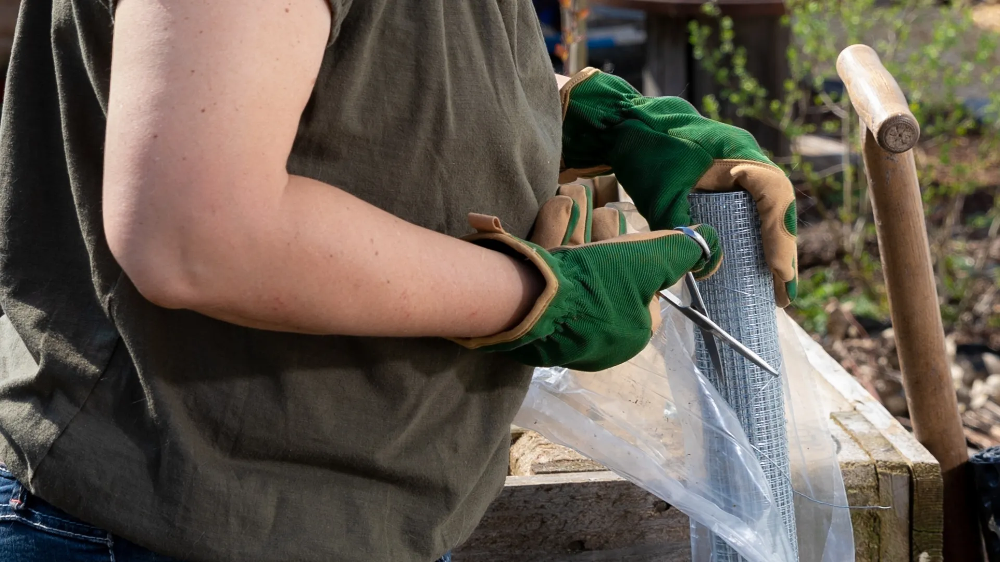

Squirrels are rodent Houdinis with immense jaw strength. These persistent critters have been known to chew through wood, stucco, and even aluminum metal. Welded stainless steel and galvanized wire mesh are your top weapon in battling squirrel infestations in your home and garden.
Like mice and rats, a squirrel can fit through any hole larger than its head. In most cases, that's a hole of just 4 centimeters (about 1.5 inches) across! Jaw strength is another squirrel superpower. At 500 pounds per square inch (PSI), a gray squirrel's bite is about three times stronger than a human's (162 PSI). To constantly crack open and gnaw through nuts and seeds, this rodent's incisor teeth never stop growing.
For your home and garden, that means squirrels can easily gain access to attics, garden beds, and even the walls of your home unless you take steps to properly deny them entry.
What Can I Put in My Yard to Keep the Squirrels Away?
We recommend protecting key areas with wire mesh screens. For instance, if squirrels keep chewing into your trash cans, you can follow these squirrel-proofing steps:
- Trace the trash can lid onto a metal mesh screen.
- Using tin snips, scissors, or another tool for cutting metal, cut out the shape you traced onto the metal wire mesh.
- Fit the hardware cloth/metal mesh into the inside of the trash can lid. You may need to add a few slits for a good fit.
- Using a strong adhesive such as Liquid Nails, Gorilla Glue, or adhesive caulk, glue the edge of the metal wire mesh to the underside of the trash can lid. Follow the manufacturer's instructions for glue drying time.
Wearing gloves will protect your hands from metal shards!

More Squirrel-Proofing Projects With Wire Mesh
Here are a few more squirrel-proofing projects that use hardware cloth or wire mesh panels:
Protect Your Garden Beds
Position wire mesh atop the soil surrounding your greenery, camouflaging it under a discrete layer of soil or mulch. For those botanical beauties residing in outdoor containers or elevated garden plots, build a secure haven by snugly wrapping wire mesh around the periphery. Dig it down deep, ensuring at least a 6-inch barrier beneath the soil, creating an impenetrable shield against those subterranean adventurers.

Flower Bulb Protection
Flower bulb protection is easy with wire mesh cloth. Simply place a layer of mesh over bulb planting areas. Top with a thin layer of soil and mulch. This solution prevents squirrels from digging up your bulbs while still allowing sunlight and water to nourish plants.
Prevent Home & Garage Access
Add sturdy wire mesh to foundation vents and attic soffits. Hardware cloth will deny squirrels access while still allowing for airflow. Walk the perimeter of your home each fall to check for any areas where squirrels (and other invasive rodents) could squeeze through. Like mice and rats, squirrels look for warm places to live before winter arrives. Installing wire mesh cloth will deny squirrels entry.
What is the Best Mesh for Rodent Control?
Squirrels' mandibular advantages make everyday containers no match for their bite. Trash cans, electrical wires, plastic pipes, even metal siding—squirrels can gnaw their way through all these materials and more. The best meshes to stop squirrel access are therefore both strong and durable. We recommend welded stainless steel and galvanized metal mesh.
"At 500 PSI, a gray squirrel's bite is about three times stronger than a human's. Only welded stainless steel or galvanized wire mesh can withstand this force."
Need wire mesh for squirrel-proofing your home and garden? At Kestrel Metal, we supply premium galvanized and stainless steel welded wire mesh in various mesh sizes and gauges. Our experienced team provides technical support and competitive pricing with worldwide shipping. Request a Quote today — we respond within 24 hours with detailed specifications and pricing for your project.